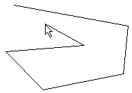

Create new Poly-Line

Create new Poly-Line |
|
Draws a new poly-line in the current drawing. Press the left mouse button to select the first point of the line. Move the mouse to the next point and press the left mouse button again. To terminate poly-line creation, press the right mouse button.

Menu:
Extensions | Draw | Poly Line
 'Draw' toolbar
'Draw' toolbar
 no shortcut
no shortcut